Feedback Form
|
|
Start of Tutorial > Start of Trail > Start of Lesson |
Search
Feedback Form |
Several classes support dialogs — windows that are more limited than frames. To create simple, standard dialogs, you use theJOptionPaneclass. The
ProgressMonitorclass can put up a dialog that shows the progress of an operation. Two other classes,JColorChooserandJFileChooser, also supply standard dialogs. To bring up a print dialog, you can use the PrintingAPI. To create custom dialogs, use the
JDialogThe code for simple dialogs can be minimal. For example, here's an informational dialog:
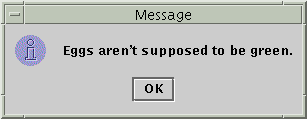 [PENDING: snapshot needs to be updated]Here is the code that creates and shows it:
The rest of this section covers the following topics:JOptionPane.showMessageDialog(frame, "Eggs aren't supposed to be green.");
Every dialog is dependent on a frame. When that frame is destroyed, so are its dependent dialogs. When the frame is iconified, its dependent dialogs disappear from the screen. When the frame is deiconified, its dependent dialogs return to the screen. The AWT automatically provides this behavior.A dialog can be modal. When a modal dialog is visible, it blocks user input to all other windows in the program. The
JDialogs thatJOptionPanecreates are modal. To create a non-modal dialog, you must use theJDialogclass directly.The
JDialogclass is a subclass of the AWTjava.awt.DialogDialoga root pane and support for a default close operation. These are the same features thatJFramehas, and usingJDialogdirectly is very similar to usingJFrame. If you're going to useJDialogdirectly, then you should understand the material in Using Top-Level Containers and How to Make Frames, especially Responding to Window-Closing Events.Even when you use
JOptionPaneto implement a dialog, you're still using aJDialogbehind the scenes. The reason is thatJOptionPaneis simply a container that can automatically create aJDialogand add itself to theJDialog's content pane.
Here's a picture of an application that displays dialogs.
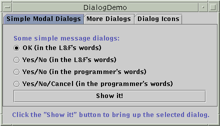 [PENDING: snapshot needs to be updated]
Try this:
- Run DialogDemo using JavaTM Web Start
- Click the Show it! button.
A modal dialog will appear. Until you close it, the application will be unresponsive, although it will repaint itself if necessary. You can close the dialog either by clicking a button in the dialog or explicitly, such as by using the dialog's window decorations.- In the More Dialogs pane, click the bottom radio button and then the Show it! button.
A non-modal dialog will appear. Note that the DialogDemo window remains fully functional while the non-modal dialog is up.- While the non-modal dialog is showing, iconify the DialogDemo window.
The dialog will disappear from the screen until you deiconify the DialogDemo window.
UsingJOptionPane, you can create and customize several different kinds of dialogs.JOptionPaneprovides support for laying out standard dialogs, providing icons, specifying the dialog's title and text, and customizing the button text. Other features allow you to customize the components the dialog displays and specify where the dialog should appear onscreen. You can even specify that an option pane put itself into an internal frame (JInternalFrame) instead of aJDialog.When you create a
Note: The internal frames thatJOptionPanecreates look like regular dialogs but are currently non-modal. See bug 4139692for details.
JOptionPane, look-and-feel-specific code adds components to theJOptionPaneand determines the layout of those components.
JOptionPane's icon support lets you easily specify which icon the dialog displays. You can use a custom icon, no icon at all, or any one of four standardJOptionPaneicons (question, information, warning, and error). Each look and feel has its own versions of the four standard icons. The following figure shows the icons used in the Java look and feel.
Icons provided by JOptionPane
(Java look and feel shown)question information warning error
For most simple modal dialogs, you create and show the dialog using one ofJOptionPane'sshowXxxDialogmethods. If your dialog should be an internal frame, then addInternalaftershow— for example,showMessageDialogchanges toshowInternalMessageDialog. If you need to control the dialog's window-closing behavior or if the dialog isn't modal, then you should directly instantiateJOptionPaneand add it to aJDialoginstance. Then invokesetVisible(true)on theJDialogto make it appear.The two most useful
showXxxDialogmethods areshowMessageDialogandshowOptionDialog. TheshowMessageDialogmethod displays a simple, one-button dialog. TheshowOptionDialogmethod displays a customized dialog — it can display a variety of buttons with customized button text, and can contain a standard text message or a collection of components.The other two
showXxxDialogmethods are used less often. TheshowConfirmDialogmethod asks the user to confirm something, but has the disadvantage of having standard button text (Yes/No or the localized equivalent, for example) rather than button text customized to the user's situation (Start/Cancel, for example). A fourth method,showInputDialog, is designed to display a modal dialog that gets a string from the user, using either a text field or an uneditable combo box.Here are some examples, taken from
DialogDemo.java, of using
showMessageDialog,showOptionDialog, and theJOptionPaneconstructor. For more example code, seeDialogDemo.javaThe arguments to all of the
showMessageDialog- Displays a modal dialog with one button, which is labeled "OK" (or the localized equivalent). You can easily specify the message, icon, and title that the dialog displays. Here are some examples of using
showMessageDialog: [PENDING: snapshots need to be updated]
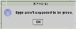 //default title and icon JOptionPane.showMessageDialog(frame, "Eggs aren't supposed to be green.");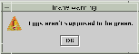 //custom title, warning icon JOptionPane.showMessageDialog(frame, "Eggs aren't supposed to be green.", "Inane warning", JOptionPane.WARNING_MESSAGE);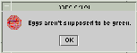 //custom title, error icon JOptionPane.showMessageDialog(frame, "Eggs aren't supposed to be green.", "Inane error", JOptionPane.ERROR_MESSAGE);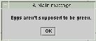 //custom title, no icon JOptionPane.showMessageDialog(frame, "Eggs aren't supposed to be green.", "A plain message", JOptionPane.PLAIN_MESSAGE);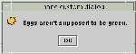 //custom title, custom icon JOptionPane.showMessageDialog(frame, "Eggs aren't supposed to be green.", "Inane custom dialog", JOptionPane.INFORMATION_MESSAGE, icon);showOptionDialog- Displays a modal dialog with the specified buttons, icons, message, title, and so on. With this method, you can change the text that appears on the buttons of standard dialogs. You can also perform many other kinds of customization.
[PENDING: snapshots need to be updated]
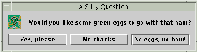 //Custom button text Object[] options = {"Yes, please", "No, thanks", "No eggs, no ham!"}; int n = JOptionPane.showOptionDialog(frame, "Would you like some green eggs to go " + "with that ham?", "A Silly Question", JOptionPane.YES_NO_CANCEL_OPTION, JOptionPane.QUESTION_MESSAGE, null, options, options[2]);JOptionPane(constructor)- Creates a
JOptionPanewith the specified buttons, icons, message, title, and so on. You must then add the option pane to aJDialog, register a property-change listener on the option pane, and show the dialog. See Stopping Automatic Dialog Closing for details. [PENDING: snapshots need to be updated]
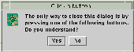 final JOptionPane optionPane = new JOptionPane( "The only way to close this dialog is by\n" + "pressing one of the following buttons.\n" + "Do you understand?", JOptionPane.QUESTION_MESSAGE, JOptionPane.YES_NO_OPTION);showXxxDialogmethods andJOptionPaneconstructors are standardized, though the number of arguments for each method and constructor varies. The following list describes each argument. To see the exact list of arguments for a particular method, see The Dialog API.
Component parentComponent- The first argument to each
showXxxDialogmethod is always the parent component, which must be a frame, a component inside a frame, or null. If you specify a frame, then the dialog will appear over the center of the frame, and depend on that frame. If you specify a component inside a frame, then the dialog will appear over the center of that component, and depend on that component's frame. If you specify null, then the look and feel picks an appropriate position for the dialog — generally the center of the screen — and the dialog doesn't depend on any visible frame.The
JOptionPaneconstructors do not include this argument. Instead, you specify the parent frame when you create theJDialogthat contains theJOptionPane, and you use theJDialogsetLocationRelativeTomethod to set the dialog's position.Object message- This required argument specifies what the dialog should display in its main area. Generally, you specify a string, which results the dialog displaying a label with the specified text. You can split the message over several lines by putting newline (
\n) characters inside the message string. For example:"Complete the sentence:\n \"Green eggs and...\""String title- The title of the dialog.
int optionType- Specifies the set of buttons that appear at the bottom of the dialog. Choose from one of the following standard sets:
DEFAULT_OPTION,YES_NO_OPTION,YES_NO_CANCEL_OPTION,OK_CANCEL_OPTION.int messageType- This argument determines the icon displayed in the dialog. Choose from one of the following values:
PLAIN_MESSAGE(no icon),ERROR_MESSAGE,INFORMATION_MESSAGE,WARNING_MESSAGE,QUESTION_MESSAGE.Icon icon- The icon to display in the dialog.
Object[] options- Generally used to specify the string displayed by each button at the bottom of the dialog. See Customizing Button Text in a Standard Dialog for more information. Can also be used to specify icons to be displayed by the buttons or non-button components to be added to the button row.
Object initialValue- Specifies the default value to be selected.
You can either let the option pane display its default icon or specify the icon using the message type or icon argument. By default, an option pane created with
showMessageDialogdisplays the information icon, one created withshowConfirmDialogorshowInputDialogdisplays the question icon, and one created with aJOptionPaneconstructor displays no icon. To specify that the dialog display a standard icon or no icon, specify the message type corresponding to the icon you desire. To specify a custom icon, use the icon argument. The icon argument takes precedence over the message type; as long as the icon argument has a non-null value, the dialog displays the specified icon.
When you useJOptionPaneto create a dialog, you can either use the standard button text (which might vary by look and feel and locale) or specify different text. Either way, the option pane type determines how many buttons appear. For example,YES_NO_OPTIONdialogs always have exactly two buttons, andYES_NO_CANCEL_OPTIONdialogs have three buttons.The following code, taken from
DialogDemo.javashowConfirmDialog, which uses the look-and-feel wording for the two buttons. The second dialog usesshowOptionDialogso it can customize the wording. With the exception of wording changes, the dialogs are identical.[PENDING: snapshots need to be updated]
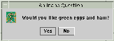 //default icon, custom title int n = JOptionPane.showConfirmDialog( frame, "Would you like green eggs and ham?", "An Inane Question", JOptionPane.YES_NO_OPTION);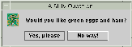 Object[] options = {"Yes, please", "No way!"}; int n = JOptionPane.showOptionDialog(frame, "Would you like green eggs and ham?", "A Silly Question", JOptionPane.YES_NO_OPTION, JOptionPane.QUESTION_MESSAGE, null, //don't use a custom Icon options, //the titles of buttons options[0]); //default button titleAs the previous code snippets showed, the
showMessageDialog,showConfirmDialog, andshowOptionDialogmethods return an integer indicating the user's choice. The values for this integer areYES_OPTION,NO_OPTION,CANCEL_OPTION,OK_OPTION, andCLOSED_OPTION. Except forCLOSED_OPTION, each option corresponds to the button the user pressed. WhenCLOSED_OPTIONis returned, it indicates that the user closed the dialog window explicitly, rather than by choosing a button inside the option pane.Even if you change the strings that the standard dialog buttons display, the return value is still one of the pre-defined integers. For example, a
YES_NO_OPTIONdialog always returns one of the following values:YES_OPTION,NO_OPTION, orCLOSED_OPTION.
The only form ofshowXxxDialogthat doesn't return an integer isshowInputDialog, which returns anObjectinstead. ThisObjectis generally aStringreflecting the user's choice. Here is an example of usingshowInputDialogto create a dialog that lets the user choose one of three strings: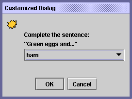 If you don't care to limit the user's choices, you can either use a form of theObject[] possibilities = {"ham", "spam", "yam"}; String s = (String)JOptionPane.showInputDialog( frame, "Complete the sentence:\n" + "\"Green eggs and...\"", "Customized Dialog", JOptionPane.PLAIN_MESSAGE, icon, possibilities, "ham"); //If a string was returned, say so. if ((s != null) && (s.length() > 0)) { setLabel("Green eggs and... " + s + "!"); return; } //If you're here, the return value was null/empty. setLabel("Come on, finish the sentence!");showInputDialogmethod that takes fewer arguments or specifynullfor the array of objects. In the Java look and feel, substitutingnullforpossibilitiesresults in a dialog that has a text field and looks like this: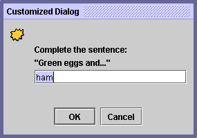 Because the user can type anything into the text field, you might want to check the returned value and ask the user to try again if it's invalid. Another approach is to create a custom dialog that validates the user-entered data before it returns. See
CustomDialog.javaIf you're designing a custom dialog, you need to design your dialog's API so that you can query the dialog about what the user chose. For example,
CustomDialoghas agetValidatedTextmethod that returns the text the user entered.
By default, when the user clicks aJOptionPane-created button, the dialog closes. But what if you want to check the user's answer before closing the dialog? In this case, you must implement your own property change listener so that when the user clicks a button, the dialog doesn't automatically close.
DialogDemocontains two dialogs that implement a property change listener. One of these dialogs is a custom modal dialog, implemented inCustomDialogJOptionPaneboth to get the standard icon and to get layout assistance. The other dialog, whose code is below, uses a standard Yes/NoJOptionPane. Though this dialog is rather useless as written, its code is simple enough that you can use it as a template for more complex dialogs.Besides setting the property change listener, the following code also calls the
JDialog'ssetDefaultCloseOperationmethod and implements a window listener that handles the window close attempt properly. If you don't care to be notified when the user closes the window explicitly, then ignore the bold code.final JOptionPane optionPane = new JOptionPane( "The only way to close this dialog is by\n" + "pressing one of the following buttons.\n" + "Do you understand?", JOptionPane.QUESTION_MESSAGE, JOptionPane.YES_NO_OPTION); final JDialog dialog = new JDialog(frame, "Click a button", true); dialog.setContentPane(optionPane); dialog.setDefaultCloseOperation( JDialog.DO_NOTHING_ON_CLOSE); dialog.addWindowListener(new WindowAdapter() { public void windowClosing(WindowEvent we) { setLabel("Thwarted user attempt to close window."); } }); optionPane.addPropertyChangeListener( new PropertyChangeListener() { public void propertyChange(PropertyChangeEvent e) { String prop = e.getPropertyName(); if (dialog.isVisible() && (e.getSource() == optionPane) && (prop.equals(JOptionPane.VALUE_PROPERTY))) { //If you were going to check something //before closing the window, you'd do //it here. dialog.setVisible(false); } } }); dialog.pack(); dialog.setVisible(true); int value = ((Integer)optionPane.getValue()).intValue(); if (value == JOptionPane.YES_OPTION) { setLabel("Good."); } else if (value == JOptionPane.NO_OPTION) { setLabel("Try using the window decorations " + "to close the non-auto-closing dialog. " + "You can't!"); }
The following tables list the commonly usedJOptionPaneandJDialogconstructors and methods. Other methods you're likely to call are defined by theDialogWindowComponentpack,setSize, andsetVisible.The API is listed as follows:
- Showing Standard Modal Dialogs (using
JOptionPaneClass Methods)- Methods for Using
JOptionPanes Directly- Frequently Used
JDialogConstructors and Methods
Showing Standard Modal Dialogs (Using JOptionPaneClass Methods)Method Purpose static void showMessageDialog(Component, Object)
static void showMessageDialog(Component, Object, String, int)
static void showMessageDialog(Component, Object, String, int, Icon)Show a one-button, modal dialog that gives the user some information. The arguments specify (in order) the parent component, message, title, message type, and icon for the dialog. See Creating and Showing Simple Dialogs for a discussion of the arguments and their effects. static int showOptionDialog(Component, Object, String, int, int, Icon, Object[], Object)Show a customized modal dialog. The arguments specify (in order) the parent component, message, title, option type, message type, icon, options, and initial value for the dialog. See Creating and Showing Simple Dialogs for a discussion of the arguments and their effects. static int showConfirmDialog(Component, Object)
static int showConfirmDialog(Component, Object, String, int)
static int showConfirmDialog(Component, Object, String, int, int)
static int showConfirmDialog(Component, Object, String, int, int, Icon)Show a modal dialog that asks the user a question. The arguments specify (in order) the parent component, message, title, option type, message type, and icon for the dialog. See Creating and Showing Simple Dialogs for a discussion of the arguments and their effects. static String showInputDialog(Object)
static String showInputDialog(Component, Object)
static String showInputDialog(Component, Object, String, int)
static String showInputDialog(Component, Object, String, int, Icon, Object[], Object)Show a modal dialog that prompts the user for input. The single-argument version specifies just the message, with the parent component assumed to be null. The arguments for the other versions specify (in order) the parent component, message, title, message type, icon, options, and initial value for the dialog. See Creating and Showing Simple Dialogs for a discussion of the arguments and their effects. static void showInternalMessageDialog(...)
static void showInternalOptionDialog(...)
static void showInternalConfirmDialog(...)
static String showInternalInputDialog(...)Implement a standard dialog as an internal frame. See the JOptionPaneAPI documentation
Methods for Using JOptionPanes DirectlyMethod or Constructor Purpose JOptionPane()
JOptionPane(Object)
JOptionPane(Object, int)
JOptionPane(Object, int, int)
JOptionPane(Object, int, int, Icon)
JOptionPane(Object, int, int, Icon, Object[])
JOptionPane(Object, int, int, Icon, Object[], Object)Creates a JOptionPaneinstance. See Creating and Showing Simple Dialogs for a discussion of the arguments and their effects.static Frame getFrameForComponent(Component)
static JDesktopPane getDesktopPaneForComponent(Component)Handy JOptionPaneclass methods that find the frame or desktop pane, respectively, that the specified component is in.int getMaxCharactersPerLineCount()Determines where line breaks will be automatically inserted in the option pane's text. (The default is Integer.MAX_VALUE.) To use this method, you must create aJOptionPanesubclass. For example, the following code results in an option pane with one word per line:JOptionPane op = new JOptionPane("This is the message text.") { public int getMaxCharactersPerLineCount() { return 5; } };
Frequently Used JDialogConstructors and MethodsMethod or Constructor Purpose JDialog()
JDialog(Dialog)
JDialog(Dialog, boolean)
JDialog(Dialog, String)
JDialog(Dialog, String, boolean)
JDialog(Dialog, String, boolean, GraphicsConfiguration)
JDialog(Frame)
JDialog(Frame, boolean)
JDialog(Frame, String)
JDialog(Frame, String, boolean)
JDialog(Frame, String, boolean, GraphicsConfiguration)Creates a JDialoginstance. TheFrameargument, if any, is the frame (usually aJFrameobject) that the dialog depends on. Make the boolean argumenttrueto specify a modal dialog,falseor absent to specify a non-modal dialog. You can also specify the title of the dialog, using a string argument. The constructors taking thejava.awt.GraphicsConfigurationargument were introduced in 1.4.void setContentPane(Container)
Container getContentPane()Get and set the content pane, which is usually the container of all the dialog's components. See Using Top-Level Containers for more information. void setDefaultCloseOperation(int)
int getDefaultCloseOperation()Get and set what happens when the user tries to close the dialog. Possible values: DISPOSE_ON_CLOSE,DO_NOTHING_ON_CLOSE,HIDE_ON_CLOSE(the default). See Responding to Window-Closing Events for more information.void setLocationRelativeTo(Component)Centers the dialog over the specified component. static void setDefaultLookAndFeelDecorated(boolean)
static boolean isDefaultLookAndFeelDecorated()Set or get a hint as to whether the dialog's window decorations (such as borders, or widgets to close the window) should be provided by the current look and feel. Otherwise the dialog's decorations will be provided by the current window manager. See Specifying Window Decorations for more information. Introduced in 1.4.
This table lists examples that useJOptionPaneorJDialog. To find other examples that use dialogs, see the example lists for progress bars, color choosers, and file choosers.
Example Where Described Notes DialogDemo,
CustomDialogThis section Creates many kinds of dialogs, using JOptionPaneandJDialog.Framework— Brings up a confirmation dialog when the user selects the Quit menu item. ListDialogHow to Use BoxLayout Implements a modal dialog containing a scrolling list and two buttons. Doesn't use JOptionPane, except for the utility methodgetFrameForComponent.
|
|
Start of Tutorial > Start of Trail > Start of Lesson |
Search
Feedback Form |
Copyright 1995-2004 Sun Microsystems, Inc. All rights reserved.